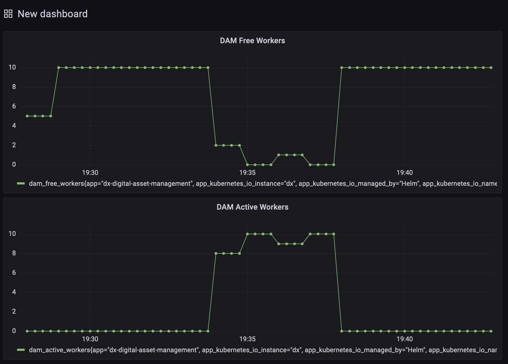

NodeJS Metrics
PoC Goals
The goal is to evaluate how we can expose Prometheus compatible metrics in our NodeJS applications and expose metrics via the main NodeJS process of one of our applications. The outcome of that PoC should be documented so it can be reused for a thorough implementation in our NodeJS applications as required.
For this PoC, the DAM is used as an example application. Due to the similar structure of all skeleton based NodeJS projects, the steps shown here can be re-used in other applications like RingAPI as well.
Prepare application to expose metrics
Install prom-client to the server package
We use the package prom-client to generate Prometheus compatible metrics. This package exposes NodeJS default metrics and is also able to expose custom metrics if desired.
cd packages/server-v1
npm install --save prom-client
After the install is successful, the prom-client can be used.
Expose metrics endpoint
The prom-client itself is only creating a Prometheus compatible data structure, but not exposing those via any HTTP endpoint.
Therefore, we create a metrics probe endpoint at the path /probe/metrics. Since application metrics and logging are mostly infrastructure related information, choosing this path appeared appropriate.
We create the file /packages/server-v1/src/probes/metrics.probe.ts with the following contents:
/*
********************************************************************
* Licensed Materials - Property of HCL *
* *
* Copyright HCL Technologies Ltd. 2021. All Rights Reserved. *
* *
* Note to US Government Users Restricted Rights: *
* *
* Use, duplication or disclosure restricted by GSA ADP Schedule *
********************************************************************
*/
import { NextFunction, Request, Response } from 'express';
import * as client from 'prom-client';
import { loggerFactory } from '@enchanted-prod/logger';
const logger = loggerFactory();
client.collectDefaultMetrics({
gcDurationBuckets: [0.001, 0.01, 0.1, 1, 2, 5], // These are the default buckets.
});
/*
* This probe provides prometheus consumable metrics.
*/
export class MetricsProbe {
public metricsProbeHandler = async (req: Request, res: Response, next: NextFunction) => {
logger.debug('Metric Probe is called.');
const reg = client.register;
const defaultMetrics = await reg.metrics();
return res.send(defaultMetrics).status(200);
}
}
After that, we adjust the file /packages/server-v1/src/probes/index.js to also include the metrics endpoint.
/*
********************************************************************
* Licensed Materials - Property of HCL *
* *
* Copyright HCL Technologies Ltd. 2021. All Rights Reserved. *
* *
* Note to US Government Users Restricted Rights: *
* *
* Use, duplication or disclosure restricted by GSA ADP Schedule *
********************************************************************
*/
export * from './ready.probe';
export * from './live.probe';
export * from './metrics.probe';
With that configured, we are now able to enable the endpoint inside the /packages/server-v1/src/server.ts where the other probes are already in place:
const readyProbe = new ReadyProbe(this.lbApp, this.operationScheduler);
this.app.use('/probe/ready', readyProbe.readyProbeHandler);
const liveProbe = new LiveProbe();
this.app.use('/probe/live', liveProbe.liveProbeHandler);
// Expose the metrics probe endpoint
const metricsProbe = new MetricsProbe();
this.app.use('/probe/metrics', metricsProbe.metricsProbeHandler)
const staticUi = new StaticUi();
With that configured, the DAM Pod will now expose metrics data at /probe/metrics.
Add custom metrics
To expose custom metrics, we can leverage prom-client again and add custom metrics like counters or gauges.
The example adds the gauge values dam_active_workers and dam_free_workers as a custom metric.
Therefore we add two custom gauges in the file /packages/server-v1/src/operations/scheduler.ts.
const activeWorkerGauge = new client.Gauge({ name: 'dam_active_workers', help: 'Active workers handling operations.' });
const freeWorkerGauge = new client.Gauge({ name: 'dam_free_workers', help: 'Free workers ready for operations.' });
It contains the name of the metric, as well as a text description that will be shown as a help for the metrics values.
Whenever the count of active or free workers change, we need to update the previously created gauge by setting the new value.
activeWorkerGauge.set(this.activeWorkers.workers.length);
freeWorkerGauge.set(this.freeWorkers.workers.length);
In case of DAM, we enhance the activeWorkers and freeWorkers arrays to trigger the update of the gauges themselves whenever workers are added to or removed from it.
Deploying DAM with NodeJS metrics enabled in Kubernetes
For building the image and pushing it to artifactory, a build pipeline for DAM has been used on PJT.
Deploy DX including the DAM image with metrics
The DX deployment used in this PoC is running on k3s locally and with a minimal configuration.
The Helm Charts used are hcl-dx-deployment-v2.0.0_20210716-1545_rohan_develop.tgz.
Only DAM, Core, Persistence, Image Processor, RingAPI and Ambassador are deployed, with a minimal request set of resources.
The following custom values are being used for deployment:
#********************************************************************
#* Licensed Materials - Property of HCL *
#* *
#* Copyright HCL Technologies Ltd. 2021. All Rights Reserved. *
#* *
#* Note to US Government Users Restricted Rights: *
#* *
#* Use, duplication or disclosure restricted by GSA ADP Schedule *
#********************************************************************
# Prometheus DAM PoC values, smallest deployment
# Image related configuration
images:
# Container repository used to retrieve the images
repository: "quintana-docker.artifactory.cwp.pnp-hcl.com/dx-build-output"
# Image tag for each application
tags:
core: "v95_CF197_20210802-055523_rohan_develop_6107af8e"
digitalAssetManagement: "v1.9.0_20210802-1721_pjd_feature_DXQ-16661-prom-exporter-poc"
imageProcessor: "v1.10.0_20210721-1401_rohan_release_95_CF197"
persistence: "v1.10.0_20210727-1300_rohan_release_95_CF197"
ringApi: "v1.10.0_20210726-1106_rohan_develop"
ambassadorIngress: "1.5.4"
ambassadorRedis: "5.0.1"
# Image name for each application
names:
core: "core/dxen"
digitalAssetManagement: "core-addon/media-library"
imageProcessor: "core-addon/image-processor"
persistence: "core-addon/persistence/postgres"
ringApi: "core-addon/api/ringapi"
ambassadorIngress: "common/ambassador"
ambassadorRedis: "common/redis"
# Resource allocation settings, definition per pod
# Use number + unit, e.g. 1500m for CPU or 1500M for Memory
resources:
# Content composer resource allocation
contentComposer:
requests:
cpu: "100m"
memory: "128Mi"
# Core resource allocation
core:
requests:
cpu: "1000m"
memory: "3072Mi"
# Design Studio resource allocation
designStudio:
requests:
cpu: "100m"
memory: "128Mi"
# Digital asset management resource allocation
digitalAssetManagement:
requests:
cpu: "250m"
memory: "1G"
# Image processor resource allocation
imageProcessor:
requests:
cpu: "100m"
memory: "1280Mi"
# Open LDAP resource allocation
openLdap:
requests:
cpu: "200m"
memory: "512Mi"
# Persistence resource allocation
persistence:
requests:
cpu: "250m"
memory: "512Mi"
# Remote Search resource allocation
remoteSearch:
requests:
cpu: "500m"
memory: "768Mi"
# Ring API resource allocation
ringApi:
requests:
cpu: "100m"
memory: "128Mi"
# Ambassador ingress resource allocation
ambassadorIngress:
requests:
cpu: "200m"
memory: "300Mi"
# Ambassador Redis resource allocation
ambassadorRedis:
requests:
cpu: "100m"
memory: "256Mi"
# Runtime Controller resource allocation
runtimeController:
requests:
cpu: "100m"
memory: "256Mi"
applications:
contentComposer: false
core: true
designStudio: false
digitalAssetManagement: true
imageProcessor: true
openLdap: false
persistence: true
remoteSearch: false
ringApi: true
ambassador: true
runtimeController: false
Install Prometheus
To install prometheus, we use Helm.
Add Prometheus Helm Chart Repo to Helm:
helm repo add prometheus-community https://prometheus-community.github.io/helm-charts
We can extract the default values via Helm:
helm show values prometheus-community/prometheus > prom-values.yaml
We'll use the following values for a simple PoC deployment of Prometheus, disabling persistence and additional services.
serviceAccounts:
alertmanager:
create: false
nodeExporter:
create: false
alertmanager:
enabled: false
nodeExporter:
enabled: false
server:
enabled: true
persistentVolume:
enabled: false
service:
type: NodePort
pushgateway:
enabled: false
Install the Prometheus Application:
helm install prometheus prometheus-community/prometheus -n prom -f prom-values.yaml
Find the NodePort that is used and access Prometheus:
NODEPORT=$(kubectl get -o jsonpath="{.spec.ports[0].nodePort}" services prometheus-server -n prom)
echo $NODEPORT
You can now access Prometheus using your Browser:
http://<NODE_IP>:<NODE_PORT>
Adjust DAM Pods to be scraped by Prometheus
Add the following annotations to the DAM Pods in the StatefulSet to have Prometheus automatically scrape the metrics endpoint.
kubectl edit StatefulSet dx-digital-asset-management -n prom
spec:
template:
metadata:
annotations:
prometheus.io/scrape: "true"
prometheus.io/path: "/probe/metrics"
prometheus.io/port: "3000"
The DAM Pod will be restarted shortly and Prometheus should scrape the DAM Pod.

Configure a test dashboard for DAM
You can use the metrics dam_active_workers and dam_free_workers.
Here is a sample JSON which can be used:
{
"annotations": {
"list": [
{
"builtIn": 1,
"datasource": "-- Grafana --",
"enable": true,
"hide": true,
"iconColor": "rgba(0, 211, 255, 1)",
"name": "Annotations & Alerts",
"type": "dashboard"
}
]
},
"editable": true,
"gnetId": null,
"graphTooltip": 0,
"id": null,
"links": [],
"panels": [
{
"datasource": null,
"fieldConfig": {
"defaults": {
"color": {
"mode": "palette-classic"
},
"custom": {
"axisLabel": "",
"axisPlacement": "auto",
"barAlignment": 0,
"drawStyle": "line",
"fillOpacity": 0,
"gradientMode": "none",
"hideFrom": {
"legend": false,
"tooltip": false,
"viz": false
},
"lineInterpolation": "linear",
"lineWidth": 1,
"pointSize": 5,
"scaleDistribution": {
"type": "linear"
},
"showPoints": "auto",
"spanNulls": false,
"stacking": {
"group": "A",
"mode": "none"
},
"thresholdsStyle": {
"mode": "off"
}
},
"mappings": [],
"thresholds": {
"mode": "absolute",
"steps": [
{
"color": "green",
"value": null
},
{
"color": "red",
"value": 80
}
]
}
},
"overrides": [
{
"__systemRef": "hideSeriesFrom",
"matcher": {
"id": "byNames",
"options": {
"mode": "exclude",
"names": [
"dam_free_workers{app=\"dx-digital-asset-management\", app_kubernetes_io_instance=\"dx\", app_kubernetes_io_managed_by=\"Helm\", app_kubernetes_io_name=\"hcl-dx-deployment\", app_kubernetes_io_version=\"95_CF197\", controller_revision_hash=\"dx-digital-asset-management-554ccc9d7b\", helm_sh_chart=\"hcl-dx-deployment-2.0.0\", instance=\"10.42.0.75:3000\", job=\"kubernetes-pods\", kubernetes_namespace=\"prom\", kubernetes_pod_name=\"dx-digital-asset-management-0\", release=\"dx\", statefulset_kubernetes_io_pod_name=\"dx-digital-asset-management-0\"}"
],
"prefix": "All except:",
"readOnly": true
}
},
"properties": [
{
"id": "custom.hideFrom",
"value": {
"legend": false,
"tooltip": false,
"viz": true
}
}
]
}
]
},
"gridPos": {
"h": 8,
"w": 12,
"x": 0,
"y": 0
},
"id": 4,
"options": {
"legend": {
"calcs": [],
"displayMode": "list",
"placement": "bottom"
},
"tooltip": {
"mode": "single"
}
},
"targets": [
{
"exemplar": true,
"expr": "dam_free_workers",
"interval": "",
"legendFormat": "",
"refId": "A"
}
],
"title": "DAM Free Workers",
"type": "timeseries"
},
{
"datasource": null,
"description": "",
"fieldConfig": {
"defaults": {
"color": {
"mode": "palette-classic"
},
"custom": {
"axisLabel": "",
"axisPlacement": "auto",
"barAlignment": 0,
"drawStyle": "line",
"fillOpacity": 0,
"gradientMode": "none",
"hideFrom": {
"legend": false,
"tooltip": false,
"viz": false
},
"lineInterpolation": "linear",
"lineWidth": 1,
"pointSize": 5,
"scaleDistribution": {
"type": "linear"
},
"showPoints": "auto",
"spanNulls": false,
"stacking": {
"group": "A",
"mode": "none"
},
"thresholdsStyle": {
"mode": "off"
}
},
"mappings": [],
"thresholds": {
"mode": "absolute",
"steps": [
{
"color": "green",
"value": null
},
{
"color": "red",
"value": 80
}
]
}
},
"overrides": []
},
"gridPos": {
"h": 8,
"w": 12,
"x": 0,
"y": 8
},
"id": 2,
"options": {
"legend": {
"calcs": [],
"displayMode": "list",
"placement": "bottom"
},
"tooltip": {
"mode": "single"
}
},
"targets": [
{
"exemplar": true,
"expr": "dam_active_workers",
"interval": "",
"legendFormat": "",
"refId": "A"
}
],
"title": "DAM Active Workers",
"type": "timeseries"
}
],
"refresh": "10s",
"schemaVersion": 30,
"style": "dark",
"tags": [],
"templating": {
"list": []
},
"time": {
"from": "now-15m",
"to": "now"
},
"timepicker": {},
"timezone": "",
"title": "New dashboard",
"uid": null,
"version": 0
}
The output looks like this:

Using existing Grafana Dashboards
There are also existing Grafana dashboards that can be leveraged.
One that is related to NodeJS and prom-client can be found here Grafana Dashboard 11159.
Conclusion
The use of prom-client enables us to easily expose default NodeJS metrics as well as custom applications metrics that are bound to our application logic. The implementation is straight forward and the main effort lies within defining metrics that should be exposed.
We will need to adjust our Helm charts to add the necessary annotations to all application Pods that expose metrics for prometheus. With that, prometheus will automatically scrape those applications and aggregate the metrics data.
The NodeJS default metrics also allow for in-depth analysis on performance issues, that can be seen in monitoring of the NodeJS runtime.